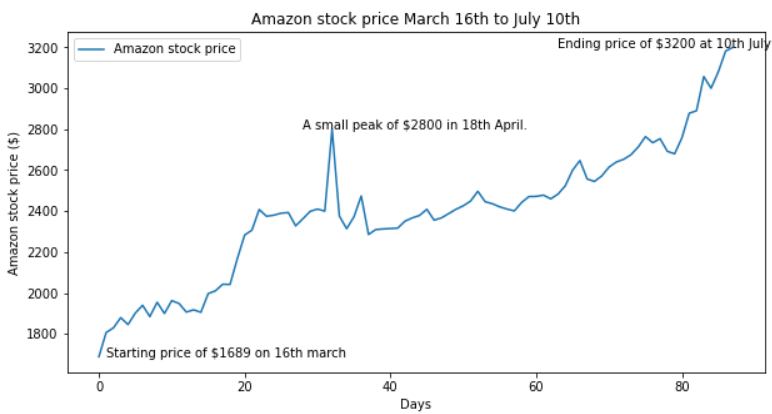

On this page I want to discuss a couple of economics based topics which I found over the lockdown and found interesting:
Over lockdown some business and companies eperienced many changes in the way they do business and some campanies' profits either plummeted or sky rocketed. A company who's profits sky rocketed includes Amazon who's stock price went very high as shown in the graph below which I made using python.
Since people have turned to the online shopping lifestyle to buy items and amazon has taken huge advantage of this since, basically, if you want an item it is probably on amazon. With the millions more people who signed up to amazon over lockdown, amazon found an unexpected huge growth of demand leading to the company to reap the rewards of $11,000 per second. Therefore, they had to hire many more people for delivery driving or working in the factories to supply all of this demand. Furthmore, amazon web serives also took off since the amount of people using this business break as an opportunity to get their websites going. Overall, the amount of people having to do their groceries and spending their money turned to amazon causing a big spike of price. After all of this pandemonium of demand and profit for amazon , Bezos has become the first person to be worth $200,000,000,000, even though before covid-19 he sold $3.4 billion worth of amazon stock.
Monopolies exist every where in the world from poor to rich economies. For instance, the national grid which supplies everyone in Great Britain electricity. But if you think about it, they do have a pure monopoly since they are the largest output of electricity and no other company is as large as them.
Furthmore, it is vital that the national grid is government owned sice if you can imagine it was owned by a private company, then that would be chaos since they would just be able to determine their own prices; this would be damaging for the economy since many people would have to take loans since there would be no other competition. This is why governments believe that these kind of markets are so important for the economy that they nationalised these markets in the 1940's by the Labour government. Governments may also purposefully create private monopolies like television broadcasting. This regulates consumption of the service and theoretically the government would be able to maintain high standards. This is an example of a natural monopoly since the start up costs are so high that is dissuades other buyers from entering the market.
Monoposonies are where a market can be controlled and dominated by a single buyer. Even though there are monopsonies like google which can be an example of as one, they also exist where only people with the education and skill can do the job. For instance, let's say becoming a train conductor is so difficult that only a few hundred people in a city could become one. This would create a monopsony since the supply is controlled by these conductors and if they wish to go on strike, there would be no one else to replace them since only they can do it.
Another case of monopolisation was the black cabs since they could be so easily hailed down on the road to call a very experienced driver who had to complete a rigorous London streets test where they would be able to drive from any point to another in London without using a navigator. These black cab drivers were deliberately kept in short supply.Although a few smaller companies have tried to compete, nothing has come close until the arrival of "Uber". As they boasted about benefits like cheaper prices and a driver a few buttons on the app away, Uber was damaging the black cabs monopoly with the help of smartphones to create the power shift. Furthermore, the Uber app or website allowed the customer to see the driver, vehicle details, pricing on the app and contact number it seemed like the obvious answer to get an Uber insead of a black cab.
Overall, monopolies exist everywhere in many types where they can be beneficial or disadvantageous for the people since if there is competition, they can compete against one another the price of the good was slowly come down since one company lowers it, then so does the other; however, benefits can include how these companies or governments can ensure standards for the service or good.